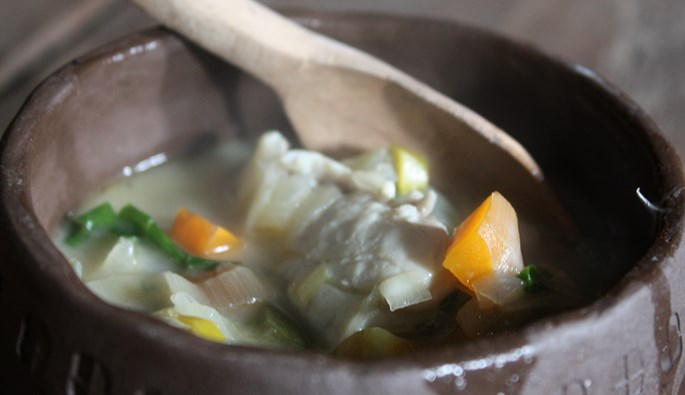

Fish Soup

Description
The Vikings in and around Ribe had quick access to the Wadden Sea, and so fish and shellfish were an important
supplement to the diet and a great source of protein.
Ingredients
- 5 carrots
- 5 medium sized onions
- Butter
- Water ca. 1.5 litre
- Chervil
- Cress
- 1 cup cream
- Salt
- 750g of cleaned fish, eg., salmon or trout
- Finely chopped top of spring onion
Steps
-
Clean and dice the onions and carrots. Rinse the herbs and chop medium fine.
-
Melt the butter in a cooking pot. Add the onions and carrots and cook for a couple of minutes. Add the water and bring
to a boil. Leave to simmer until the vegetables are 'al dente'. It's now time to add the herbs and the cream.
-
Cut the fish in bite-sized pieces and add them to the soup. Let it simmer over low heat until the fish is tender. Season
to taste.
-
Sprinkle with chopped spring onion and serve with bread.
Enjoy!
Return to the main page